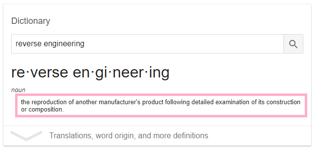
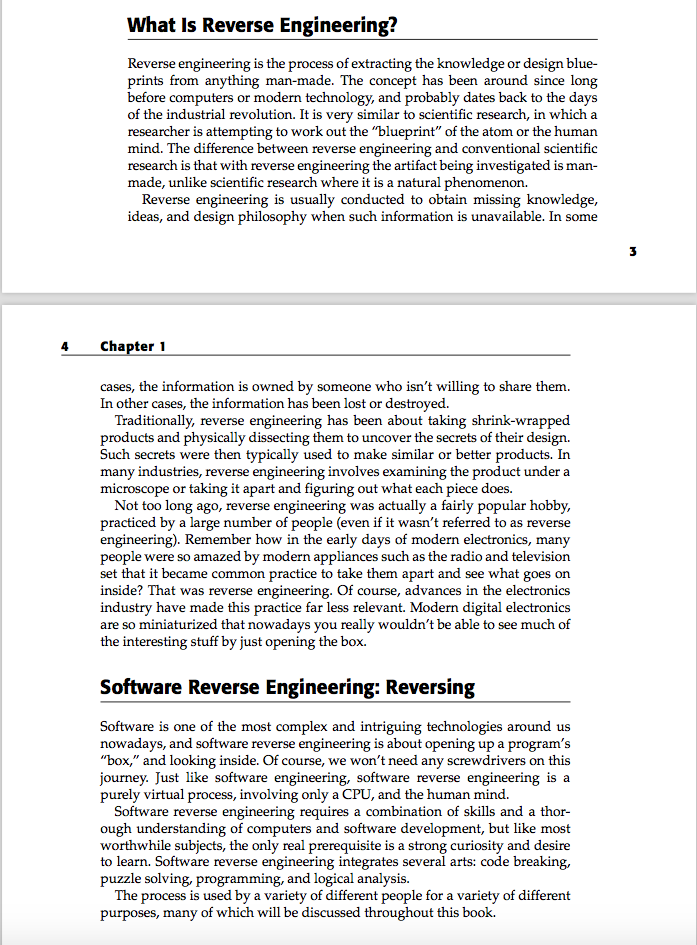
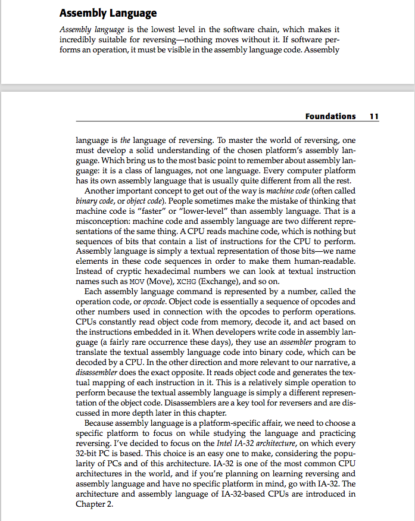

[Reverse Engineering Workshop] Prep #1 - Welcome!
Dear participants!
I am very excited to have you in the Reverse Engineering workshop.
First, please pat yourself on the back for doing it - this is going to be an adventure, not an easy one but definitely a fun one!
In order to make sure that we have a common ground for the workshop, you will be asked to go through 3 preparation assignments (this one is the first).
Please make sure you free some time to do them - this will make the workshop much more valuable and beneficial for you.
We will start with two topics:
-
What is exactly Reverse Engineering?
-
Basic ASM x86
Time estimation: 1.5-2.5 hours.
So what is exactly Reverse Engineering?

(thanks Google.)
In our case, reverse engineering is the reproduction of another person’s source code following detailed examination of the executable machine code. Namely, we figure out what a program does by examining the instructions the program asks the CPU to run.
Here’s some more information on Reverse Engineering in general and Software RE in particular (taken from Reversing: Secrets of Reverse Engineering by Eldad Eilam):

I would be happy to give you an introduction to Assembly language, it’s just that some people have already done it pretty well… So once again, an excerpt from Secrets of Reversing:

I hope you now understand the importance of knowing Assembly (and more particularly, the x86 assembly dialect) for the process of reverse engineering.
So we know what reverse engineering means and we know that it’s based on the knowledge of Assembly language. It is time to dive a little deeper into x86 Assembly. For this purpose, read through the following x86 tutorial. Stop at “Calling Conventions” .
Once again, if something is not clear, consider using Google, Wikipedia or your favorite LLM :) Don’t get too scared if some terminology is unknown yet.
This is where our first prep finishes. It’s time for some exercise, don’t you think?
Quick Check
1. What is foo in the following example? How much space does it occupy in memory?
.data
foo DW 1,1,2,3,5Show answer
foo is an array of five 16-bit numbers. Its size is 2 bytes * 5 = 10 bytes.
2. What is the value stored in EAX by the end of this code?
mov eax,0x2
mov ebx,eax
shl eax,0x2
add eax,ebx
and eax,0x8Show answer
EAX stores the value 0x8.
3. Bonus: what should be the value of EAX at the beginning of the following code, such that by the end of it, EAX = 0?
xor eax, eaxShow answer
A value XORed with itself will always return 0, so EAX can be any value.
Good luck y'all!